MSU Graduate Spatial Ecology Lab 3
Phoebe Zarnetske; plz@msu.edu
Sep 2016; rev. Sep 9, 2019, Sep 17, 2020
Lab 3: Patch Metrics & Spatial Design
This lab has 2 Parts. Part 1 involves computing patch metrics. Part 2 involves applying patch metrics to design a sampling scheme. You will need to hand in a single PDF produced from your R Markdown file with code, plots, and answers to Questions 1-4, to D2L. When referring to the code below it may be more useful to use the .Rmd file linked above. You will need to be connected to the internet to complete this lab.
At the end of Lab 3 is Homework in preparation for Lab 4 (familiarizing yourself with GitHub).
Part 1: Patch Metrics
We will be using the R package, landscapemetrics to compute patch metrics. Before we can do that, we need to set up the directories and obtain data.
Start working in R:
##### STARTING UP R
# Clear all existing data
rm(list=ls())
# Close graphics devices
graphics.off()
# Set the paths for your work
output_path<-("output")
# if this folder doesn't exist, create it
if(!dir.exists(output_path)){
dir.create(output_path)
}
# Create the folders (directories) "data" and "lab2" - If they exist already, this command won't over-write them.
data_path<-(file.path("data","lab3"))
if(!dir.exists(data_path)){
dir.create(data_path,recursive = TRUE)
}If you previously saved your workspace and want to load it here, do so this way:
load(file.path(output_path,"lab3.RData"))
NOTES on R packages used in this lab:
- With R Markdown, it is helpful to install packages locally before knitting (copy this into your R console before you knit).
for (package in c("ggplot2","raster","sp","rgdal","maptools","rgeos")) {if (!require(package, character.only=T, quietly=T)) {
install.packages(package)
library(package, character.only=T)
}
}
FedDatashould be installed from github and requiresdata.tablepackage first. If the installation below for FedData doesn’t work for you, I have included another approach to obtain 2011 NLCD data for Oregon, described farther down.
install.packages("data.table", type="binary")
library(data.table)
install.packages("remotes")
remotes::install_github("ropensci/FedData")
library(FedData)
- The packages
landscapemetricsandlandscapetoolsmay require loading separately.
install.packages("landscapemetrics")
install.packages("landscapetools")
If you run into errors installing landscape metrics or applying it, try this installation instead:
devtools::install_github("r-spatialecology/landscapemetrics")
library(landscapemetrics)
Load the packages:
library(ggplot2)
library(raster)
library(sp)
library(rgdal)
library(rgeos)
library(maptools)
library(landscapemetrics)
library(landscapetools)
library(FedData)The FedData R package is a good way to pull in US environmental data from federal sources. See more here: https://docs.ropensci.org/FedData/. Through FedData we are downloading the 2016 NLCD land cover product for Oregon. We want to work with NLCD data, so it’s important to look up its projection. That can be found in the metadata for 2016 NLCD (navigate to https://www.mrlc.gov/data, scroll down to 2016 Land Cover for CONUS, click on the 3 dots to expand the menu and select “Metadata”. Metadata contain data about data. Search for “proj” to find the projection information) https://www.mrlc.gov/downloads/sciweb1/shared/mrlc/metadata/NLCD_2016_Land_Cover_L48.xml. It’s Albers Conical Equal Area, WGS84. If you need a refresher on Coordinate Reference Systems, refer to this summary sheet (https://www.nceas.ucsb.edu/sites/default/files/2020-04/OverviewCoordinateReferenceSystems.pdf), Lab 2’s links, or resources on D2L.
Practice working with shapefiles and projecting:
# Create a polygon the state of Oregon from the States of US shapefile
if(! file.exists(file.path(data_path,'uss.zip'))){
download.file("http://www2.census.gov/geo/tiger/GENZ2014/shp/cb_2014_us_state_20m.zip", dest=file.path(data_path,"uss.zip"), mode="wb")
}
unzip (file.path(data_path,"uss.zip"), exdir = data_path)
# Read in the shapefile with rgdal package.
uss <- readOGR(file.path(data_path,"cb_2014_us_state_20m.shp"))
#Take a look at the shapefile info. Its CRS is here: https://epsg.io/42310.
summary(uss)
# What are the first 6 lines of uss?
head(uss)
# Plot it. See that it's showing the states and territories of the US.
plot(uss)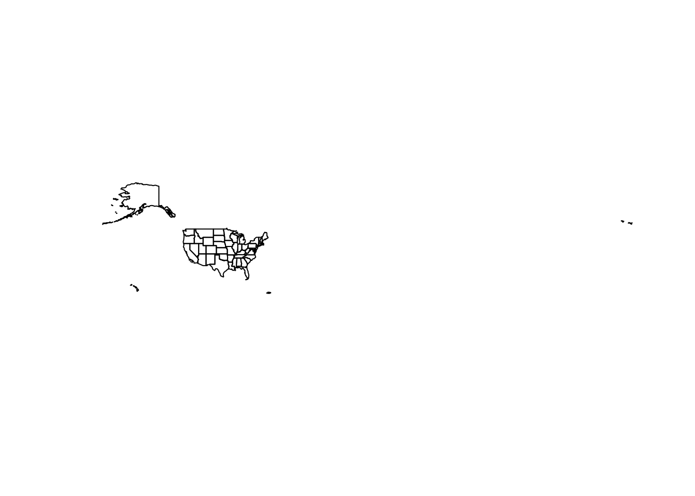
# What are the unique entries in the field, NAME?
unique(uss$NAME)Projecting We can project these data to match the NLCD data coordinate reference system (Albers, also known as NAD83 / Albers NorthAm). FedData R package returns NLCD data in a different CRS. In general you should avoid projecting rasters because projection of rasters affects their cell values. If you’re working with a raster and a vector in some spatial analysis, project the vector data to match the raster projection.
# Here's the CRS info that FedData returns for NLCD (Pseudo Mercator: https://epsg.io/3857)
merc.proj <- CRS("+proj=merc +a=6378137 +b=6378137 +lat_ts=0 +lon_0=0 +x_0=0 +y_0=0 +k=1 +units=m +nadgrids=@null +wktext +no_defs")
# Here's the CRS info for CONUS North America Albers Equal Area Conic (https://epsg.io/5070)
us.aea.proj <- CRS("+proj=aea +lat_1=29.5 +lat_2=45.5 +lat_0=23 +lon_0=-96 +x_0=0 +y_0=0 +ellps=GRS80 +datum=NAD83 +units=m +no_defs")
# First let's make a shapefile of just Oregon from the entire US shapefile:
or <- uss[uss$NAME =="Oregon",]
# Plot Oregon
plot(or, main="Latitude, Longitude NAD83")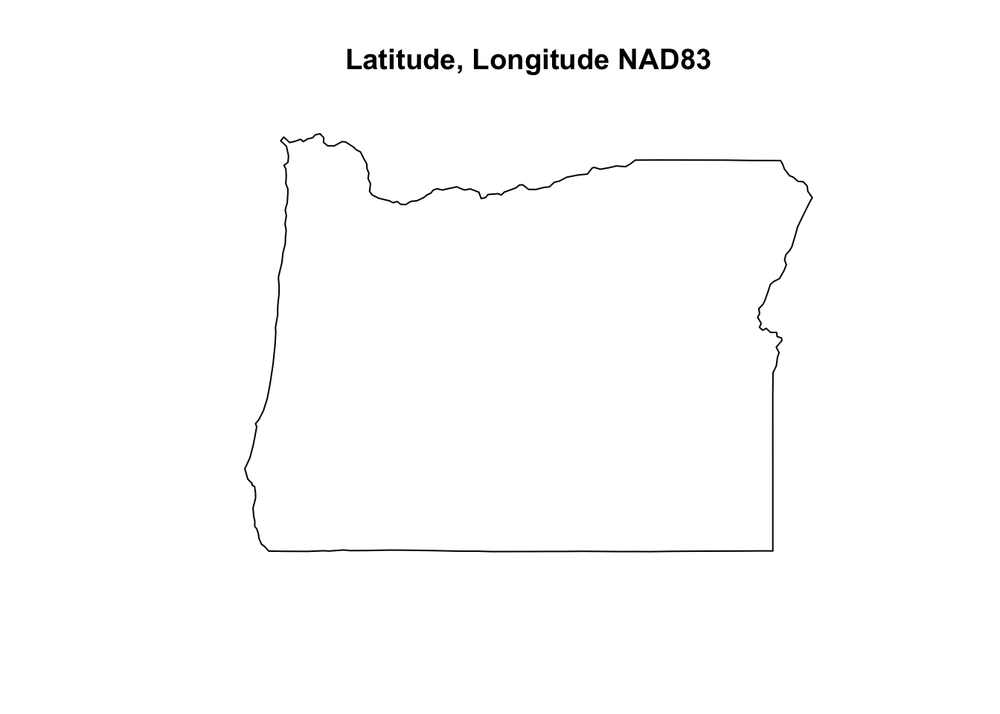
# Practice projecting, and plot again -
or1<-spTransform(or, us.aea.proj)
plot(or1, main="Albers Equal Area Conic")
# Supposed you decide to use a rectangle instead of the Oregon polygon boundary.
# Refer to the extent (min and max x and y) of the shapefile, "or1"
summary(or1)
or2 <- polygon_from_extent(raster::extent(-2294351,-1584307,2301475,2899476), proj4string='+proj=aea +lat_1=29.5 +lat_2=45.5 +lat_0=23 +lon_0=-96 +x_0=0 +y_0=0 +ellps=GRS80 +datum=NAD83 +units=m +no_defs')
# See how the or2 outlines to the polygon, "or1"
plot(or2)
plot(or1,add=T, col="blue")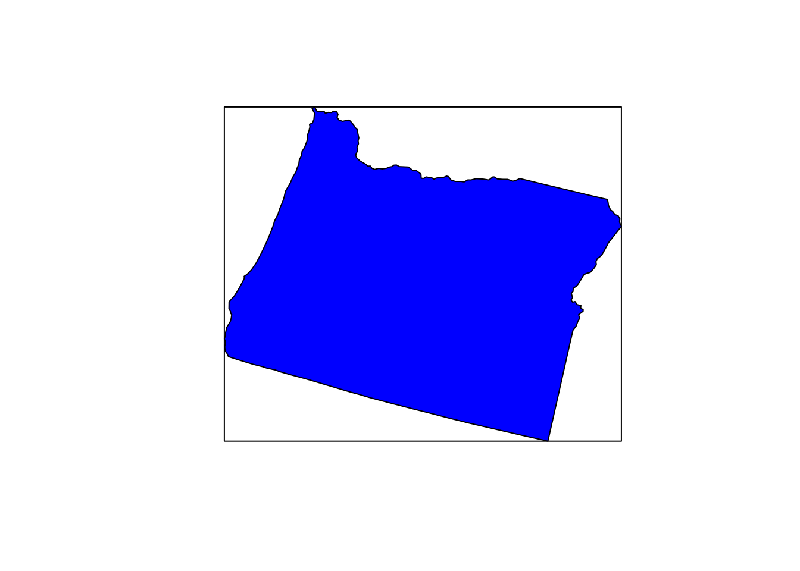
Depending on your computer, these polygons will still be too big to extract NLCD quickly (when I run it on my laptop it takes about 5 mins, so you could try it but it may get hung up if you are knitting to PDF). Let’s try a smaller extent. If you wanted to subset out just a portion of Oregon, you could select 1 wildlife management unit. Here is a map of OR Fish & Wildlife Units: https://www.dfw.state.or.us/resources/hunting/big_game/units/bigmap.asp.
Repeat the same process as above, but with the management unit, Hood.
if(! file.exists('mgmt.zip')){
download.file("https://nrimp.dfw.state.or.us/web%20stores/data%20libraries/files/ODFW/ODFW_805_5_wildlife_mgmt_units.zip",dest=file.path(data_path,"mgmt.zip"), mode="wb")
}
unzip (file.path(data_path,"mgmt.zip"), exdir = data_path)
mgmt<-readOGR(file.path(data_path,"wmu24poly.shp"))
summary(mgmt) # Its CRS is lcc (Lambert Conformal Conic: https://proj.org/operations/projections/lcc.html)
lcc.proj<-CRS("+proj=lcc +lat_0=41.75 +lon_0=-120.5 +lat_1=43 +lat_2=45.5 +x_0=400000 +y_0=0 +datum=NAD83 +units=ft +no_defs")
# Project mgmt to the lcc projection from the Oregon NLCD 2011 (see below)
mgmt1<-spTransform(mgmt, lcc.proj)
head(mgmt1)
unique(mgmt1$UNIT_NAME)
# Select the HOOD Management Unit (where Mount Hood is).
hood <- mgmt1[mgmt$UNIT_NAME =="HOOD",]
## See where it's located. Plotting and rendering may take a minute because these polygons are complex.
plot(mgmt1,main="Hood Wildlife Management Unit, Oregon")
plot(hood,add=T,col="red")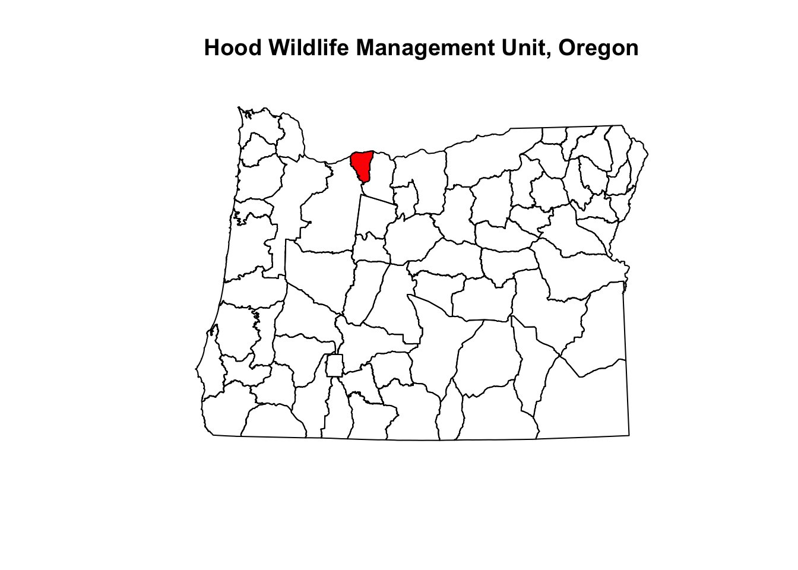
Use the get_nlcd command from FedData to extract the NLCD data for this management unit. FedData does the cropping automatically using a shapefile or raster for “template”. If you run into errors you may need to check what the projection of hood_nlcd is.
?get_nlcd
hood_nlcd<-get_nlcd(
template = hood,
label="Hood",
year = 2016,
dataset = "Land_Cover",
extraction.dir = paste0(data_path, "/FedData/"),
)
hood_nlcd # CRS = merc; project hood to overlay them on the same plot.
hood.merc<-spTransform(hood, merc.proj)
# See if you can add a legend - what are the classifications? https://www.mrlc.gov/data/legends/national-land-cover-database-2016-nlcd2016-legend
unique(hood_nlcd)
plot(hood_nlcd,legend = FALSE)
plot(hood.merc,add=TRUE, lwd=2, border='white')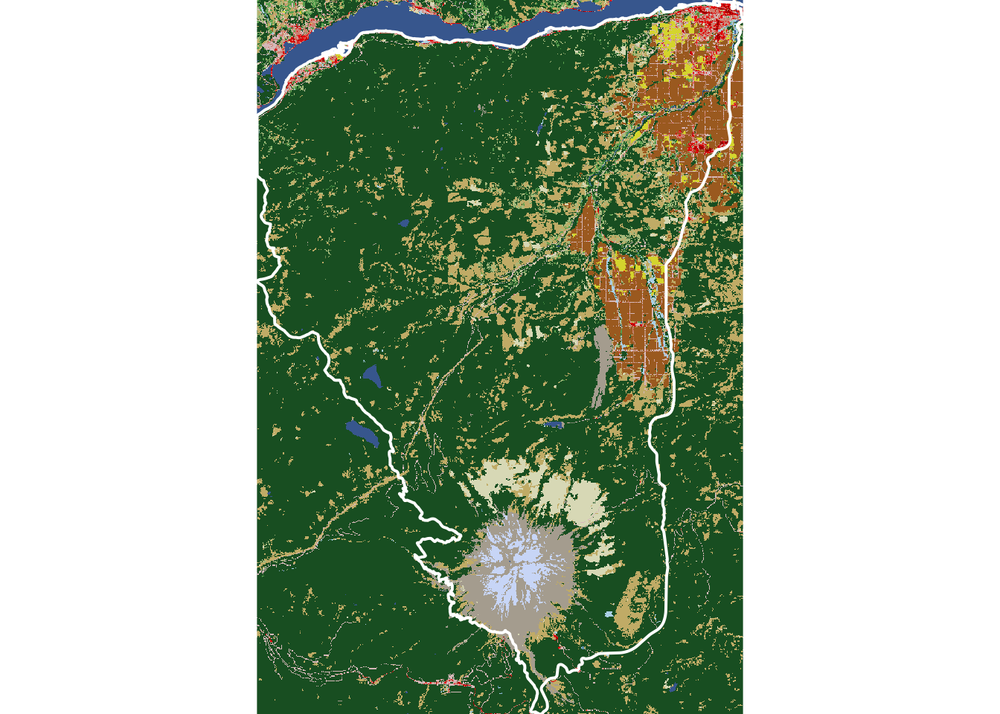
If you have trouble with the FedData package, the code below will import the 2011 Oregon NLCD directly (54 MB); it may take a few mins.
if(! file.exists('or_nlcd.zip')){
download.file("http://oe.oregonexplorer.info/ExternalContent/SpatialDataforDownload/OR_NLCD_2011.zip",
dest=file.path(data_path,"or_nlcd.zip"), mode="wb")
}
unzip (file.path(data_path,"or_nlcd.zip"), exdir = data_path)
or_nlcd <- raster(file.path(data_path,"./OR_NLCD_2011/nlcd_or_20111"))
save.image("lab3.RData")
Take a look at or_nlcd from 2011 - it is projected in lcc.
or_nlcd
Crop or_nlcd by hood
hood_nlcd<-crop(or_nlcd, extent(hood))
hood_nlcd <- mask(x = hood_nlcd, mask = hood)
plot(hood_nlcd)
plot(hood,add=TRUE, lwd=2, border='white')
If you want to output a raster as a tif
?writeRaster
writeRaster(raster, "raster.tif")
Now work with the landscapemetrics R package to compute different patch and landscape statistics.
## Make a plot of the Hood NLCD data - this renders a map of the NLCD raster. It may take a few mins to render. Then check to see if the input data is suitable for computing patch metrics
show_landscape(hood_nlcd)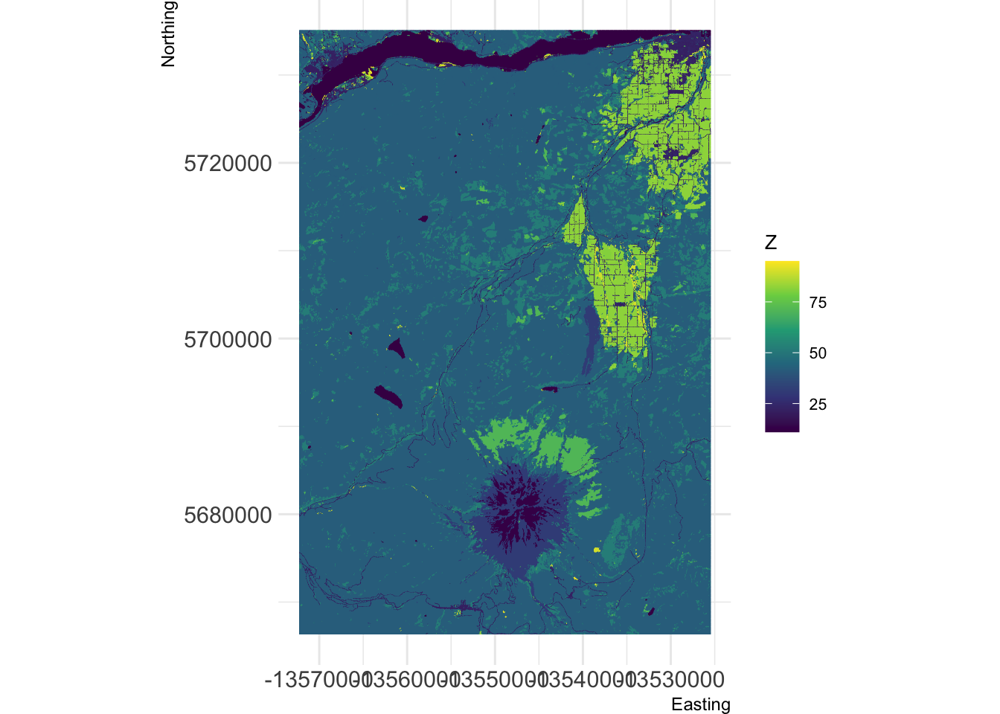
check_landscape(hood_nlcd)You could proceed to calculate metrics for all different land cover classes (this would take a while). Instead, suppose you are interested in the metrics of “forested” patches in this landscape. First, reclassify into “forest” and “nonforest”. You need to determine what the cover types are:
unique(hood_nlcd)
## Look here at the "Class/Value" to figure out which cover type(s) you want: https://www.mrlc.gov/data/legends/national-land-cover-database-2016-nlcd2016-legend. For example, evergreen is 42. However, there are other forest cover types as well. Determine how to make the raster "all forest" not just evergreen.
hood_for <- hood_nlcd
hood_for[hood_for < 41] <- 0 # make everything below 41 zero
plot(hood_for)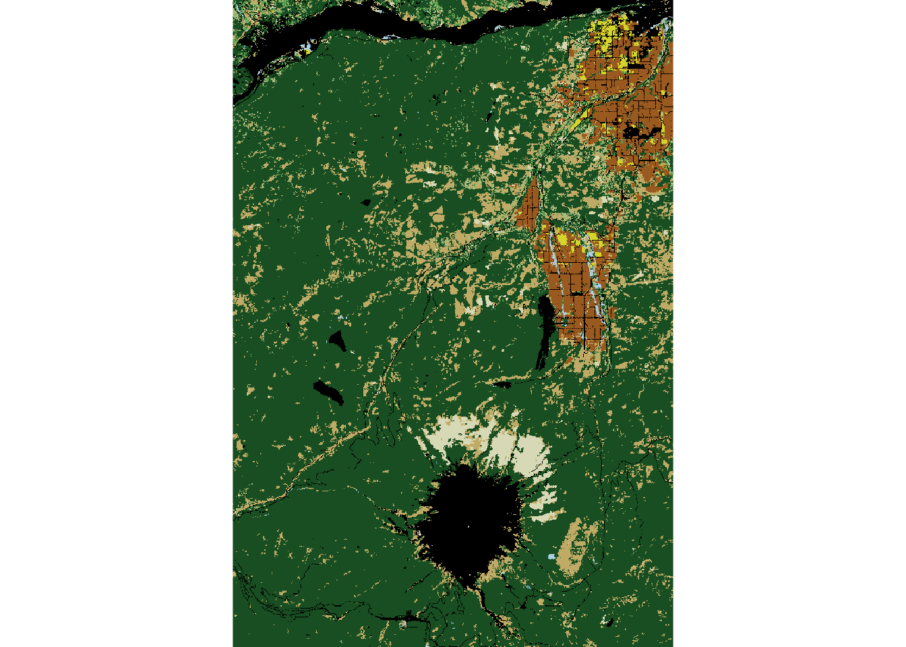
hood_for[hood_for > 43] <- 0 # make everything above 43 zero
plot(hood_for)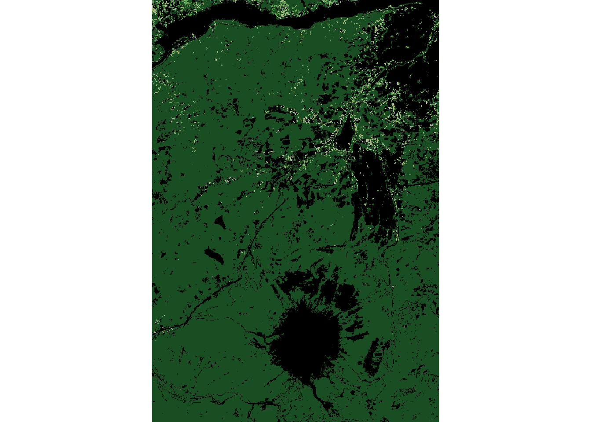
unique(hood_for)
## Assign 1 value (1) to forest.
hood_for[hood_for == 41 | hood_for == 42 | hood_for == 43] <- 1
show_landscape(hood_for)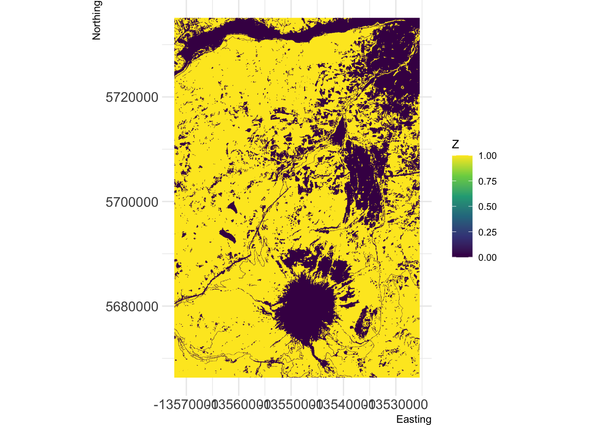
The code below follows part of this vignette: https://r-spatialecology.github.io/landscapemetrics/articles/articles/utility.html - check it out for more context and if you would like to try other commands not covered here.
## Check to see if the input data is suitable for computing patch metrics
check_landscape(hood_for)
## Look at the distinct patches for this landscape
show_patches(hood_for) 
## Show patches of each class (we have 2 classes: 0 for non-forest and 1 for forest)
show_patches(hood_for, class = "all", labels = FALSE)
## At the patch level, compute patch metrics
hood_metrics <- calculate_lsm(hood_for, what = "patch")
## Look at the different types of metrics at the patch level. Note that you can compute these metrics at the patch, landscape, or class levels.
list_lsm(level='patch')
#look at just Forested patches; subset out class==1 for forest
hood_metrics_for <- subset(hood_metrics, class == 1)
# Since hood_metrics_for is a tibble, we use this format for plotting (using ggplot2). Note that the y axis scale varies by plot when faceting by metric below. We use a log10 scale for the x axis to visualize the spread more effectively.
hood_for_metrics_hist<-hood_metrics_for %>%
select(value, metric) %>%
na.omit() %>%
ggplot(aes(value, fill = metric, color = metric)) +
geom_density(alpha = 0.2)+
scale_x_log10()+
facet_wrap(~metric, scales="free_y")
hood_for_metrics_hist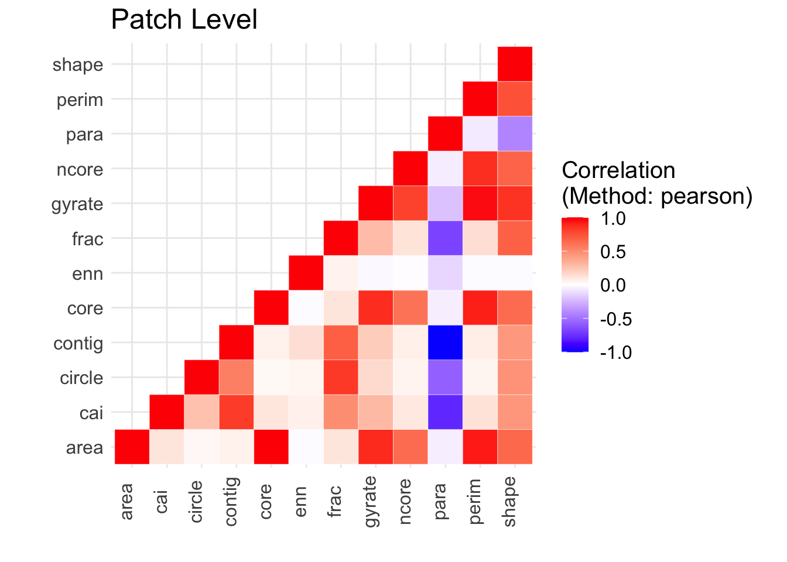
## Determine if any patch metrics for forest are correlated
hood_for_corr<-calculate_correlation(hood_metrics_for)
show_correlation(hood_for_corr, method = "pearson")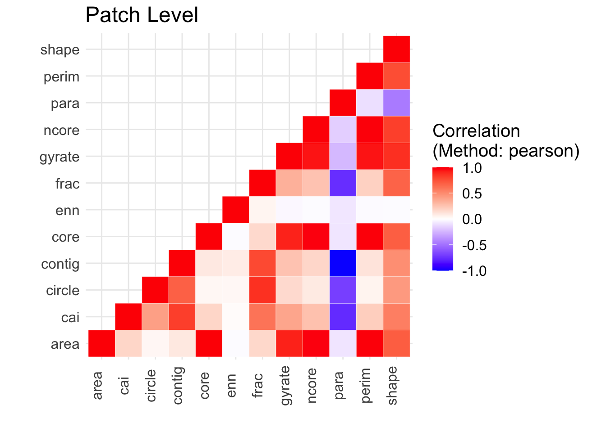
QUESTION 1:
How do the patch metrics from landscapemetrics help you understand how an organism interacts with its environment? For 3 metrics of your choice, explain in 1-2 sentences what the metric tells us about an organism’s interaction with its environment. Feel free to use examples. Refer to the list_lsm() results above. You may also want to refer to the FRAGSTATS documentation for more in-depth coverage (warning: this is a large document, I suggest searching for the patch metric term. Page 77 contains the start of the “metrics” discussion, but page 92 contains a condensed table): https://www.umass.edu/landeco/research/fragstats/documents/fragstats_documents.html
QUESTION 2:
Repeat the process above (see Repeat the same process as above, but with the management unit, Hood), but select a different management unit than Hood. Compare your other management unit patch metrics with the ones for Hood Management Area. Briefly, how do the patch metrics for Forested areas and non-Forested areas compare between the two management areas? Optional: make some plots showing the statistical distributions of patch metrics across the two areas (e.g., a histogram of patch area, by class, by management unit).
Part 2: Study Design
You decide to study the interactions between Spotted Owls and Barred Owls in Oregon forests (do a little internet searching to understand why studying these 2 species together is important, and what their habitat requirements are).
QUESTION 3.
Use GBIF data to add to one of the management unit maps you created above. On this map, overlay “recent” point locations of each of these species (as different symbols and/or different colors). Justify the timeframe you chose for the occurrences. Add a descriptive title to the plot. Add a legend, scalebar (with units), and north arrow for your map. You may want to reference Lab 2 and below for additional code.
In the raster package see the options for each command: ?plot to plot the raster ?points() to add points for the species ?legend() to add a legend ?scalebar() to add a scalebar
QUESTION 4.
If you had unlimited resources, describe how you would sample the 2 management units to obtain new occurrence data next year for both species. Are there specific forest attributes that would be helpful to know in addition to just “forest vs. non-forest”? Use terminology from the Lecture and Discussion about sampling.
Some other potentially helpful code below:
gbif: Extract out just points from Oregon (or some extent): http://www.inside-r.org/packages/cran/dismo/docs/rgbif. There are 2 ways of extracting out the points:
The commands, drawExtent and extent are both ways to specify the extent of data in gbif()
drawExtent is in the raster package: http://www.inside-r.org/packages/cran/raster/docs/drawExtent. You have to have plotted a map first (and then click on it). This won’t be possible if you’re running a script via job submission on HPCC. You can also use extent, also in the raster package, to define boundaries: http://www.inside-r.org/packages/cran/raster/docs/extent
Homework in preparation for Lab 4:
In Lab 4 we will introduce GitHub, a versioning program helpful for collaborating and tracking changes in code. You can think of it as a Google Docs version for tracking code changes (you can also use it with text). If you are familiar with GitHub, no need to go over the following, but if you are not familiar, please work through the following tutorials [personally, I use the Desktop version but any version will work]:
At a minimum, please complete this first short tutorial ahead of Lab 4:
- Command line version: https://guides.github.com/activities/hello-world/
Other versions:
Desktop version: https://help.github.com/desktop/guides/getting-started-with-github-desktop/
via RStudio: http://happygitwithr.com/rstudio-git-github.html and/or https://support.rstudio.com/hc/en-us/articles/200532077-Version-Control-with-Git-and-SVN

This work is licensed under a Licensed under CC-BY 4.0 2020 by Phoebe Zarnetske.